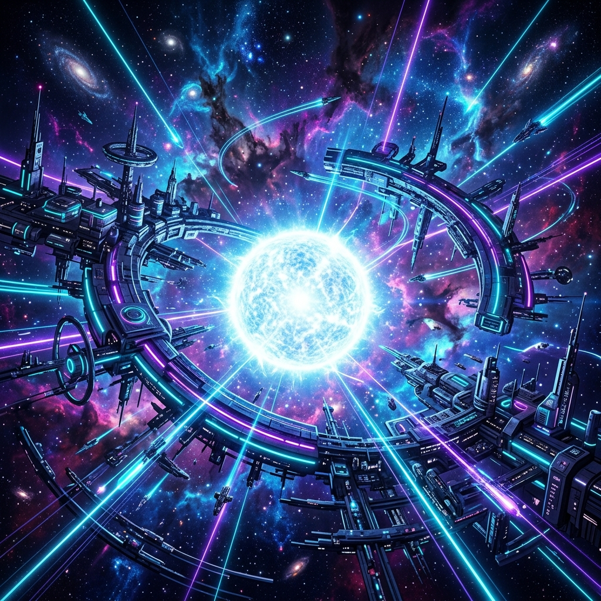

Sirius Labs; derin uzay veri iletim ağları, kuantum şifreleme ve yapay zeka tabanlı otonom keşif motorları geliştirerek insanlığı geleceğin teknolojileriyle buluşturuyor.

Kuantum mekaniği ve yapay zekanın gücünü birleştirerek geliştirdiğimiz yeni nesil çekirdek teknolojiler.
Mesafe tanımayan, anlık ve kuantum anahtarı ile şifrelenmiş veri iletim katmanı. Dinlenemez ve müdahale edilemez veri güvenliği.
Yıldız sistemleri arasındaki devasa sensör verilerini gerçek zamanlı işleyen, makine öğrenimi tabanlı karar destek algoritmaları.
Yörüngedeki uydular ve yer istasyonları arasında dinamik olarak kendini yönlendirebilen, kesintisiz iletişim ağı topolojisi.
Antik çağlardan beri gezginlerin yollarını bulmalarına yardımcı olan Sirius, bugün bizim teknolojik serüvenimizde rehberimizdir. Biz, verinin evrensel ölçekte serbestçe akabileceği, kesintisiz ve kuantum düzeyinde korunan bir iletişim altyapısı kurmayı hedefliyoruz.
Vizyonumuz, gezegenler arası ağ altyapısının temellerini atmak ve insan zekasını kuantum ağlarıyla çarparak sınırları kaldırmaktır.
Kuantum çekirdeğini simüle edin ve Sirius ağ durumunu gerçek zamanlı test edin.
[SİSTEM] Sirius Kuantum Tanılama Arayüzüne Hoş Geldiniz.
[SİSTEM] Başlatmak için aşağıdaki butona tıklayın...